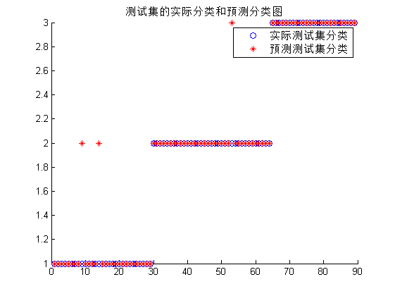

SVM神经网络的数据分类预测----意大利葡萄酒种类识别
| 该案例作者申明： |
| 1：本人长期驻扎在此板块里，对该案例提问，做到有问必答。本套书籍官方网站为：video.ourmatlab.com |
| 2：点此从当当预定本书：《Matlab神经网络30个案例分析》。 |
3：此案例有配套的教学视频，视频下载方式video.ourmatlab.com/vbuy.html。 |
| 4：此案例为原创案例，转载请注明出处（《Matlab神经网络30个案例分析》）。 |
| 5：若此案例碰巧与您的研究有关联，我们欢迎您提意见，要求等，我们考虑后可以加在案例里。 |
by liyang[faruto] @ faruto's Studio~ Email:faruto@163.com QQ:516667408 http://blog.sina.com.cn/faruto http://www.matlabsky.com http://www.mfun.la http://video.ourmatlab.com
Contents
清空环境变量
close all; clear; clc; format compact;
数据的提取和预处理
% 载入测试数据wine,其中包含的数据为classnumber = 3,wine:178*13的矩阵,wine_labes:178*1的列向量 load chapter12_wine.mat; % 画出测试数据的可视化图 figure subplot(3,5,1); hold on for run = 1:178 plot(run,wine_labels(run)); end title('class','FontSize',10); for run = 2:14 subplot(3,5,run); hold on; str = ['attrib ',num2str(run-1)]; for i = 1:178 plot(i,wine(i,run-1)); end title(str,'FontSize',10); end % 选定训练集和测试集 % 将第一类的1-30,第二类的60-95,第三类的131-153做为训练集 train_wine = [wine(1:30,:);wine(60:95,:);wine(131:153,:)]; % 相应的训练集的标签也要分离出来 train_wine_labels = [wine_labels(1:30);wine_labels(60:95);wine_labels(131:153)]; % 将第一类的31-59,第二类的96-130,第三类的154-178做为测试集 test_wine = [wine(31:59,:);wine(96:130,:);wine(154:178,:)]; % 相应的测试集的标签也要分离出来 test_wine_labels = [wine_labels(31:59);wine_labels(96:130);wine_labels(154:178)]; % 数据预处理,将训练集和测试集归一化到[0,1]区间 % mapminmax为matlab自带的映射函数 [train_wine,pstrain] = mapminmax(train_wine'); % 将映射函数的范围参数分别置为0和1 pstrain.ymin = 0; pstrain.ymax = 1; % 对训练集进行[0,1]归一化 [train_wine,pstrain] = mapminmax(train_wine,pstrain); % mapminmax为matlab较新版本自带的映射函数 [test_wine,pstest] = mapminmax(test_wine'); % 将映射函数的范围参数分别置为0和1 pstest.ymin = 0; pstest.ymax = 1; % 对测试集进行[0,1]归一化 [test_wine,pstest] = mapminmax(test_wine,pstest); % 对训练集和测试集进行转置,以符合libsvm工具箱的数据格式要求 train_wine = train_wine'; test_wine = test_wine';

SVM网络训练
model = svmtrain(train_wine_labels, train_wine, '-c 2 -g 0.02');
SVM网络预测
[predict_label, accuracy] = svmpredict(test_wine_labels, test_wine, model);
Accuracy = 96.6292% (86/89) (classification)
结果分析
% 测试集的实际分类和预测分类图 % 通过图可以看出只有三个测试样本是被错分的 figure; hold on; plot(test_wine_labels,'o'); plot(predict_label,'r*'); legend('实际测试集分类','预测测试集分类'); title('测试集的实际分类和预测分类图','FontSize',10); % web http://www.matlabsky.com/forum-31-1.html web http://www.matlabsky.com/forum-31-1.html -new;
相关论坛： 《Matlab神经网络30个案例分析》官方网站：video.ourmatlab.com Matlab技术论坛：www.matlabsky.com Matlab函数百科：www.mfun.la Matlab中文论坛：www.ilovematlab.com |